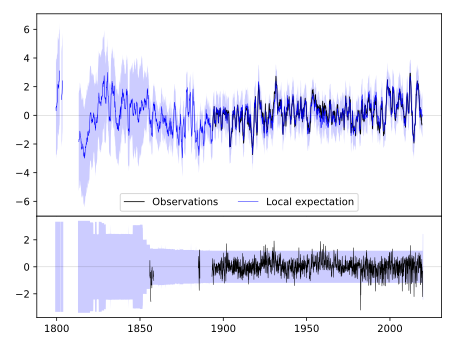
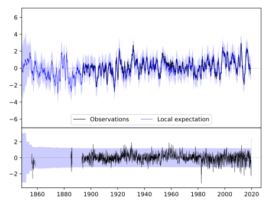
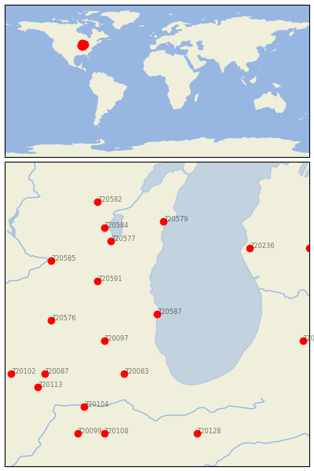

RACINE [USA]


| Neighbour | Name | Country | Distance | Lon/Lat | Years |
|---|
| 720587 | RACINE | USA | 0 | -87.8, 42.7 | 1855-2019 |
| 720097 | MARENGO | USA | 79 | -88.6, 42.3 | 1856-2019 |
| 720591 | WATERTOWN | USA | 91 | -88.7, 43.2 | 1871-2019 |
| 720083 | AURORA | USA | 108 | -88.3, 41.8 | 1857-2019 |
| 720576 | BRODHEAD | USA | 131 | -89.4, 42.6 | 1893-2019 |
| 720577 | FOND DU LAC | USA | 134 | -88.5, 43.8 | 1871-2019 |
| 720579 | MANITOWOC | USA | 155 | -87.7, 44.1 | 1851-2019 |
| 720585 | PORTAGE | USA | 157 | -89.4, 43.5 | 1890-2019 |
| 720584 | OSHKOSH | USA | 158 | -88.6, 44.0 | 1871-2019 |
| 720236 | HART 3 WSW | USA | 158 | -86.4, 43.7 | 1886-2019 |
| 720087 | DIXON 1 NW | USA | 172 | -89.5, 41.8 | 1881-2019 |
| 720104 | OTTAWA 5SW | USA | 180 | -88.9, 41.3 | 1854-2019 |
| 720239 | KALAMAZOO STATE HOSP | USA | 185 | -85.6, 42.3 | 1876-2019 |
| 720113 | WALNUT | USA | 192 | -89.6, 41.6 | 1892-2019 |
| 720582 | NEW LONDON | USA | 202 | -88.7, 44.4 | 1856-2019 |
| 720128 | RENSSELAER | USA | 206 | -87.2, 40.9 | 1864-2019 |
| 720102 | MORRISON | USA | 206 | -90.0, 41.8 | 1880-2019 |
| 720108 | PONTIAC | USA | 210 | -88.6, 40.9 | 1886-2019 |
| 720232 | BIG RAPIDS WTR WKS | USA | 217 | -85.5, 43.7 | 1887-2019 |
| 720099 | MINONK | USA | 223 | -89.0, 40.9 | 1886-2019 |